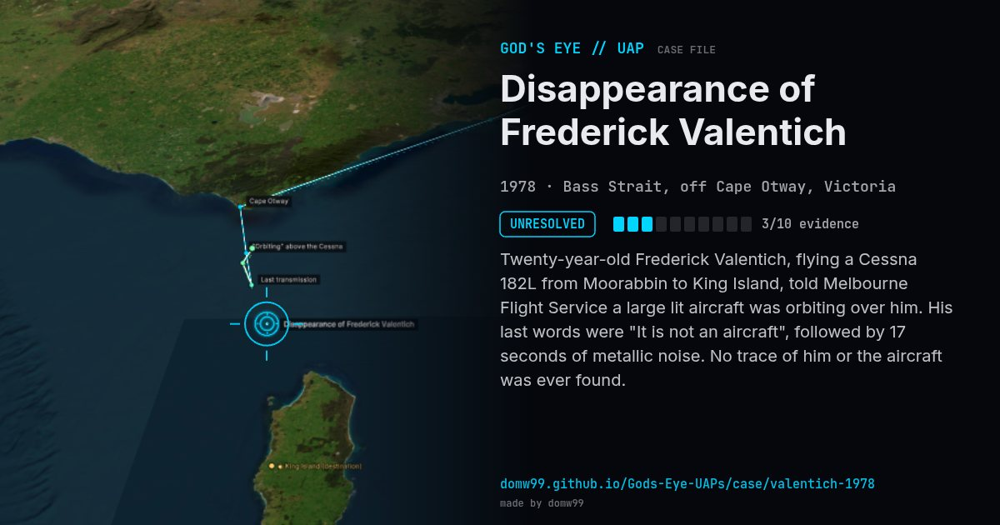

Disappearance of Frederick Valentich
UNRESOLVED

Twenty-year-old Frederick Valentich, flying a Cessna 182L from Moorabbin to King Island, told Melbourne Flight Service a large lit aircraft was orbiting over him. His last words were "It is not an aircraft", followed by 17 seconds of metallic noise. No trace of him or the aircraft was ever found.
Explanation
The Department of Transport could not determine the cause. Theories include disorientation (seeing his own lights reflected while inverted), a staged disappearance and suicide.
What was seen
Shape: "Long shape" with four bright lights, orbiting above
Witnesses: Pilot (radio transcript); later ground reports
Duration: ~6 minutes of radio contact
Browse
- Australia
- 1970s
- Unresolved
- Aviation encounters
- Official government documents
- Audio recordings or radio transcripts
- Lights and fireballs